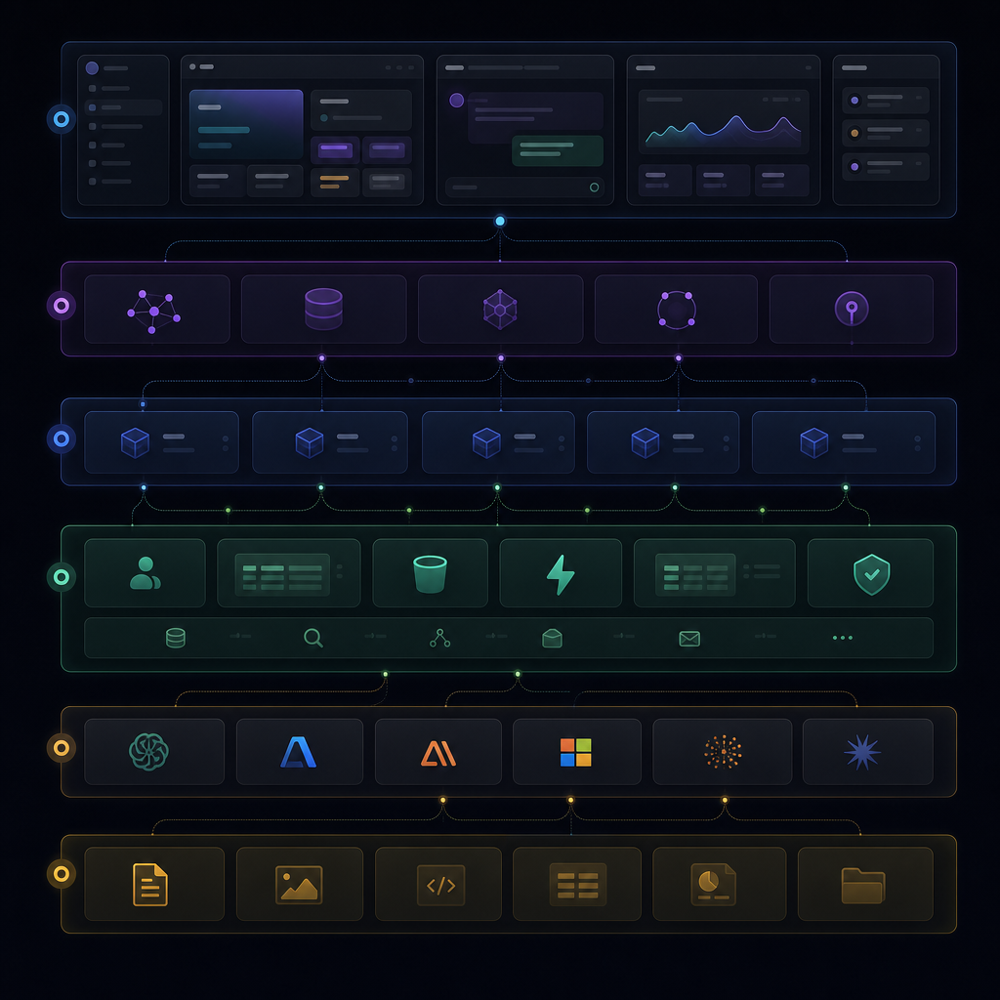
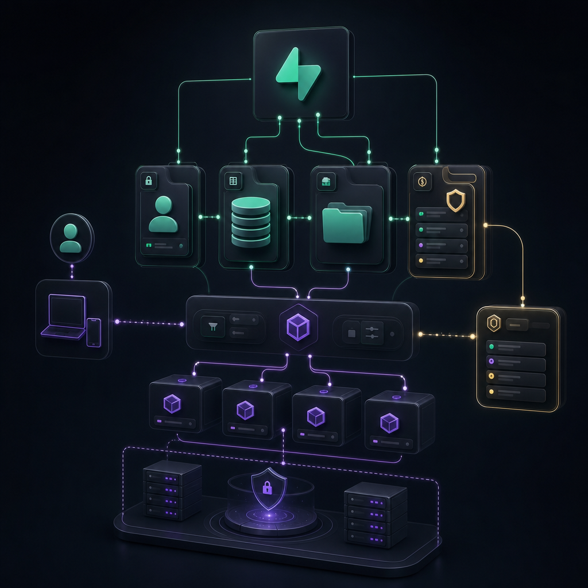
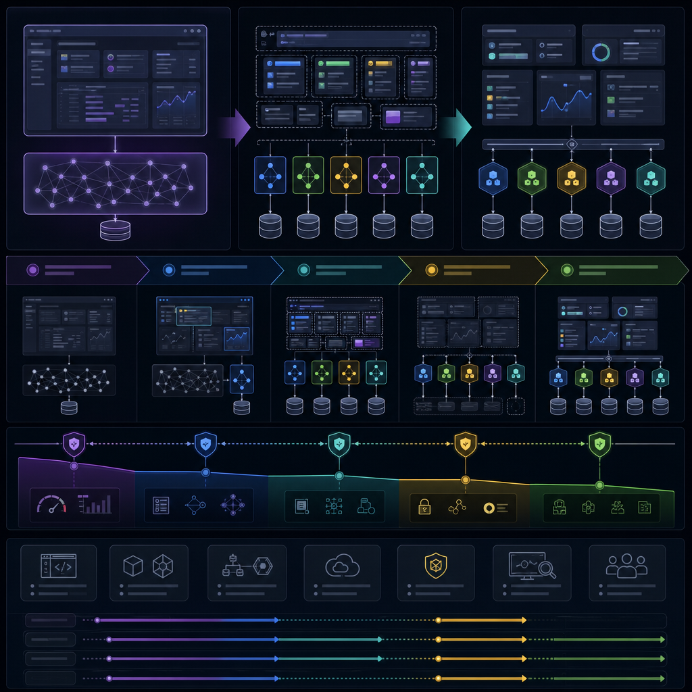
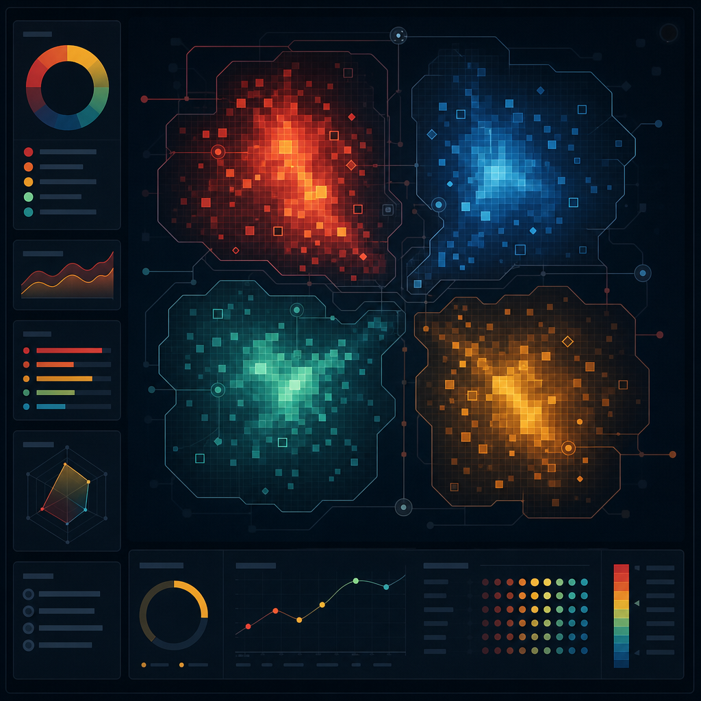

掃描層
列出目前看到的檔案、行數、touchpoint、風險與依賴。這層回答「現在有什麼」。
本地生成、privacy-preserving、無 hosted analyzer。v1.1 已加入 Narrative Intelligence Pass：不只展示掃描結果，也把結果煉成可供人類、LLM、agent 判斷下一輪架構的材料。
這個專案不是單純前端頁面，而是一個已經長出操作台、中央狀態、後端權力、runtime、artifact 與 provider 邊界的系統。第一版指出了風險；v1.1 補上它們的意義：nexus-ops 是操作艙，nexus-store 是中央神經結，Supabase 是持久化權力層，Workflow Pro 是最適合作為下一輪安全預架構入口的 typed surface。
Read machine-manifest.json, reports/02-supabase-map.md, reports/06-risk-register.md, context-packs/repo-map-compact.md first. Do not refactor src yet. P0: bearer-shaped test fixture confirmation; service role boundary; nexus-ops and nexus-store blast radius.
第一版已經會展示掃描結果，但還不夠會解讀。這一版把每個大區塊提升成思考材料：它表面是什麼、在系統裡真正扮演什麼、為什麼會長成現在這樣、混了哪些責任、未來應該長成什麼骨架。
列出目前看到的檔案、行數、touchpoint、風險與依賴。這層回答「現在有什麼」。
把掃描事實轉成架構意義。這層回答「這代表未來應該長出什麼邊界」。
只列安全切入口，不直接改產品。這層回答「第一刀可能在哪裡，但現在還不能碰哪裡」。
Read reports/11-narrative-intelligence-pass.md before touching code. Separate evidence from inference. For each UI action ask whether it is presentation-only, store-mutating, Supabase-backed, provider-backed, or artifact-authority-bearing.
{
"read_first": [
"machine-manifest.json",
"reports/11-narrative-intelligence-pass.md",
"reports/02-supabase-map.md",
"reports/06-risk-register.md",
"context-packs/repo-map-compact.md"
],
"do_not_read_whole": [
"src/components/nexus/nexus-ops.tsx",
"src/store/nexus-store.ts",
"src/components/nexus/nexus-graph.tsx",
"src/components/nexus/workflow-pro/workflow-pro-surface.tsx"
],
"safe_to_touch_first": [
"reports only",
"Workflow Pro typed tab panel extraction plan only after characterization",
"presentational read-only panels only after screen baseline"
],
"requires_symbol_level_read": [
"nexus-ops panel/action boundaries",
"nexus-store action groups and persistence slices",
"Supabase admin imports and server-only guarantees",
"generated image storage path/bucket policy"
],
"requires_human_confirmation": [
"whether to clean bearer-shaped test fixture",
"whether to create local-only Supabase config",
"whether CodeWiki may run in a verified local-only mode"
],
"known_uncertainties": [
"Knip false positives under Next.js conventions",
"custom import graph is regex-based and needs AST/symbol confirmation",
"production Supabase parity was not checked",
"CodeWiki was intentionally skipped by safety gate"
],
"next_agent_questions": [
"Is this UI section presentation-only or does it carry authority?",
"Does this code trigger provider/Supabase/artifact side effects?",
"Which store slice or API route owns the decision?",
"Which evidence is source-grounded and which is inference?"
]
}
表面上它是一個巨型 component；實際上它是 NEXUS 操作艙。workspace、graph、composer、artifact、generated history、style controls、Workflow Pro entry point 都接到這裡。它短期讓整個工作台快速成形，長期則讓 UI、authority、provider、storage 的邊界變模糊。
Agent 讀法 不要整份讀。先找 panel render function 和 callback，再判斷每個 button 是展示、store mutation、Supabase action、provider call，還是 artifact authority。
表面上它是 Zustand store；實際上它是中央神經結。workspace、agent、message、runtime、cloud sync、artifact vault、provider calls、undo/redo 都接到這裡。它不是單純狀態容器，而是多條 side effect 的匯流點。
Agent 讀法 先讀 imports、state shape、action groups。每個 set/get block 都要標註是否寫 local state、IDB、Supabase、runtime trace 或 provider result。
表面上是 client、admin、request client 與 migrations；實際上是持久化權力層。public anon key 可見不代表安全，service role server-only 才是 P0 邊界，request scoped token 則是使用者上下文。
Agent 讀法 先讀 client.ts、admin.ts、request.ts，再讀 supabase manifest。任何 UI 重構都要問它碰的是 display data 還是 authority data。
表面上是 workflow UI；實際上是下一輪安全預架構的候選入口。它的 typed props 比 nexus-ops 更清楚，適合先做 characterization-backed panel split，但不能先動 apply/import/export callback 語意。
Agent 讀法 先讀 props type 和 mode panels，把每個 mode 分成 read-only view、import/export action、runtime evidence action。
下一版不能只增加字數，要增加理解密度。每段都必須回答：這個資訊讓下一個人或下一個 LLM 更會判斷什麼？
| Section | Human | LLM | Agent | Evidence | Pre-arch | Status |
|---|---|---|---|---|---|---|
| Executive Summary | 82 | 80 | 76 | 78 | 80 | pass |
| Supabase Connection Map | 80 | 86 | 84 | 88 | 82 | pass |
| Large File Risk Zone | 74 | 82 | 80 | 82 | 84 | needs narrative lift |
| State Store Contract Map | 72 | 84 | 83 | 80 | 86 | needs narrative lift |
| Risk Register | 78 | 83 | 84 | 86 | 79 | pass |
| Refactor Playbook | 76 | 82 | 86 | 78 | 88 | pass |
| Agent Context Packs | 70 | 88 | 90 | 82 | 86 | agent-pass human-thin |
低於 75 的 section 不能只進 dashboard，要先補 evidence / inference 分界、Agent 讀法、下一輪 symbol-level 驗證方式。

NEXUS UI shell -> Zustand store -> API/runtime services -> Supabase database/auth/storage/RLS -> provider-backed LLM/image runtime.
Evidence: src/components/nexus/nexus-ops.tsx, src/store/nexus-store.ts, src/lib/supabase/*, supabase/migrations/*.

24 tables, 1 RPC, 25 migrations, 22 RLS/policy migrations.
Dynamic bucket: nexus-generated-assets via src/lib/backend/image-generation/generated-image-asset-storage.ts.
nexus-ops.tsx: UI shell, workspace panels, composer, graph bridge, artifact/history controls.
workflow-pro-surface.tsx + src/lib/workflow-pro: contract, brain context, evidence, file-node flow.
src/lib/backend + Supabase migrations: repositories, permissions, observability, storage, RLS.
9,653 lines
NEXUS 主操作台、workspace shell、chat/composer、graph/panel glue、匯入/匯出與 image/storage 入口。
先抽 workspace/session shell / graph/composer bridge / generated asset/history panels / style-engine controls / workflow-pro launcher
先別動 provider-backed runtime path / auth/workspace permission decisions / artifact download/import/export authority
2,345 lines
React Flow graph surface、agent/runtime node rendering、edge interactions、copy/run/pause controls。
先抽 node renderers / edge renderers / runtime node action adapter / graph DnD adapter
先別動 node data contract / runtime evidence display semantics
1,721 lines
Workflow Pro 的 design/brain/evidence/files/settings tabs、contract import/export、benchmark fixture UI。
先抽 tab panels / contract import review panel / evidence summary widgets / benchmark fixture drawer
先別動 apply-plan callback contract / runtimeSummary interpretation
4,814 lines
Zustand + persist/zundo 中央狀態，workspace、agents、messages、sync、Supabase、workflow runtime、provider calls 的最大收斂點。
先抽 workflow runtime slice / workspace cloud sync slice / generated history slice / auth/session slice / artifact vault slice
先別動 persistence migration layer / undo/redo temporal integration / provider-backed runtime execution
nexus-store.ts handles workspace, agents, messages, persistence, cloud sync, workflow runtime, provider calls, artifact vault and undo/redo.
Do not split before contract map and characterization tests.

9 suspected cycles from custom import graph. dependency-cruiser ran report-only but needs tsconfig-aware config to become a reliable gate.
See reports/dependency-cruiser/custom-import-graph.json.
Evidence
Inference
嚴格掃描後，tracked source 沒有 OpenAI sk-proj 形狀命中；剩餘 source 命中位於 test，可能是 dummy fixture 或 redaction 測試，但未人工確認前仍列 P0。
Next 確認 src/lib/backend/observability/observability-service.test.ts:121 的 token 是否為 dummy；若是，改成明確不可能被誤判的 fixture 名稱。
Evidence
Inference
目前引用多在 src/lib/backend/** 與 API route，方向看起來合理；但任何前端 bundle 匯入都會是嚴重事故。
Next 保留/強化 frontend-bundle-safety test，下一輪做 bundle/static import gate。
Evidence
Inference
模組化前若未建立 slice contract，容易破壞 runtime/history/cloud sync。
Next 先產 contract map 與 characterization tests，再拆 slice。
Evidence
Inference
它是 UI shell 與 domain glue 的混合體；直接重構會牽動 UI、provider、storage、auth、workflow。
Next 先拆純 presentational panels，不先碰 auth/provider/storage authority。
Evidence
Inference
多數落在 backend observability/index barrel 與 nexus-types 互相依賴，可能影響測試隔離與 bundle 邊界。
Next 下一輪用 TypeScript AST/Serena 精查，避免只靠 regex 誤判。
Evidence
Inference
Knip 在 Next.js dynamic route/test/generated report 下可能有 false positive；不可自動刪。
Next 下一輪分成 confirmed unused / route-convention / test-only / report artifact。
Evidence
Inference
目前可做靜態 map，但不能 local schema diff 或 types regeneration。
Next 若要下一輪 schema parity，先建立 local-only Supabase config，不 link production。
Evidence
Inference
需要 tsconfig-aware depcruise config 才能當正式 gate。
Next 新增 report-only config 或採 custom import graph 作 interim gate。

1. Confirm bearer-shaped test fixture is dummy or replace it.
2. Keep service role server-only bundle gate.
3. Add store action/selector contract map.
4. Start safe UI split from Workflow Pro typed panels.
5. Only then touch runtime/storage/provider adapters.
All round logs include LINE-ready summaries and validation notes.
{
"project": {
"name": "nexus-ai-ops",
"framework": "Next.js if detected",
"backend": "Supabase",
"run_created_at": "2026-06-04T23:03:06.322Z"
},
"large_files": [
{
"file": "src/components/nexus/nexus-ops.tsx",
"lines": 9653,
"risk": "P0"
},
{
"file": "src/components/nexus/nexus-graph.tsx",
"lines": 2345,
"risk": "P1"
},
{
"file": "src/components/nexus/workflow-pro/workflow-pro-surface.tsx",
"lines": 1721,
"risk": "P1"
},
{
"file": "src/store/nexus-store.ts",
"lines": 4814,
"risk": "P0"
}
],
"supabase_touchpoints": {
"tables": 24,
"rpcs": [
"record_permission_audit_log"
],
"dynamicStorageBuckets": [
"nexus-generated-assets"
]
},
"risks": [
{
"id": "P0-BEARER-SHAPE-TEST-FIXTURE",
"severity": "P0"
},
{
"id": "P0-SUPABASE-SERVICE-ROLE-BOUNDARY",
"severity": "P0"
},
{
"id": "P0-NEXUS-STORE-GOD-OBJECT",
"severity": "P0"
},
{
"id": "P0-NEXUS-OPS-BLAST-RADIUS",
"severity": "P0"
},
{
"id": "P1-IMPORT-CYCLES",
"severity": "P1"
},
{
"id": "P1-KNIP-UNUSED-CANDIDATES",
"severity": "P1"
},
{
"id": "P1-SUPABASE-LOCAL-CONFIG-MISSING",
"severity": "P1"
},
{
"id": "P2-DEPCRUISER-CONFIG-GAP",
"severity": "P2"
}
]
}